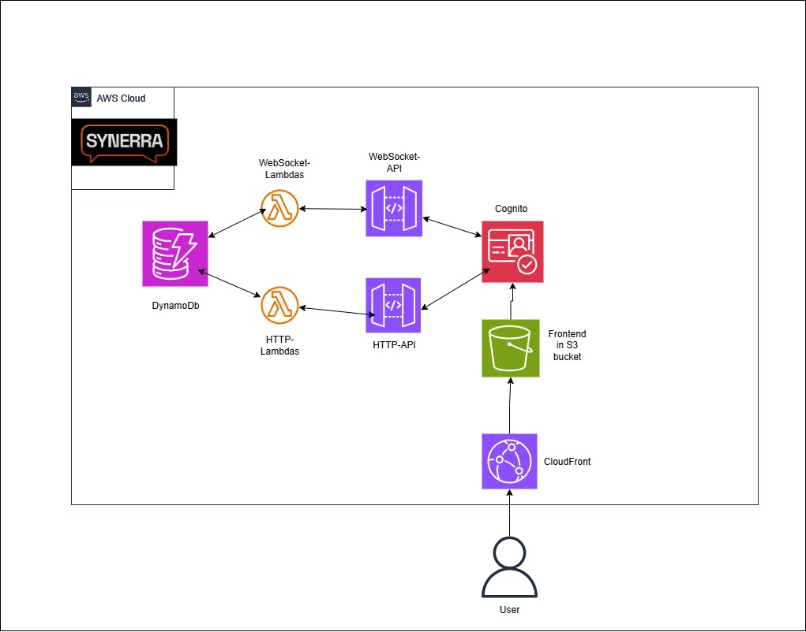
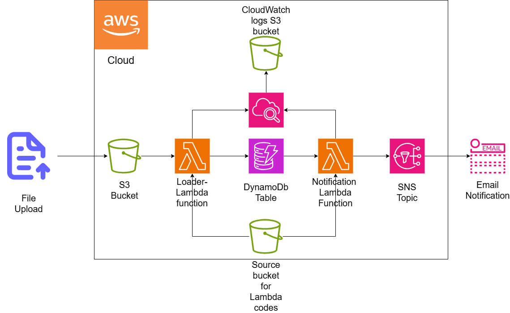

About Me
Business Information Technology student with a broad set of IT skills, including cloud computing, web development, and software architecture. I enjoy building scalable applications and exploring new technologies that solve real-world problems. My main passions are cloud services and serverless architectures, and I’m always excited to learn new things through hands-on projects.
Projects
Tech: Angular (TypeScript), Lambda, DynamoDB, Cognito, Serverless Framework
A social web application that connects gamers.
More Info
Synerra allows gamers to create their profiles, find friends on their favorite games and chat together.
Synerra is a JAMK study project done in a group. I designed the serverless backend and integrated it with the frontend.
Key Features:
- User profiles with game preferences
- Friend search and connections
- Broad list of filtering options for users and games
- Real-time chat and notifications between users
- Scalable serverless backend
- Online status for users
Video Demo:
Cloud Architecture:
Technologies Used:
- WebSocket for real-time chat, notifications and online-status
- AWS Lambda for serverless backend, allowing automatic scaling with user activity.
- DynamoDB for unpredictable traffic and low latency reads for user and chat data.
- AWS Cognito for authentication (includes Google login)
- Serverless Framework was used to define and deploy infrastructure as code, making the backend repeatable and easier to modify.
- CloudFront for frontend delivery
- AWS S3 for frontend hosting and profile picture storage
My Contributions:
- Designed and implemented backend architecture
- Configured AWS Lambda functions and DynamoDB tables
- Handled user authentication and authorization with Cognito
- Integrated backend with front-end API calls
Lambda Stats Notifier
Tech: Lambda, DynamoDb, SNS, S3
Automated workflow for processing game statistics
More Info
Automated cloud infrastructure for uploading and processing CS2 player statistics. When a .csv file is uploaded to S3, a Lambda function parses the data and stores it in DynamoDB. Another Lambda function triggers an SNS notification that emails subscribers with the top 3 players based on win rate.
Cloud Architecture:
Key Features:
- Automated processing of uploaded CSV files containing player statistics
- Serverless architecture using AWS Lambda for event-driven processing
- Storage of processed stats in DynamoDB for fast and scalable access
- Automatic email notifications to subscribers via SNS
- Event-driven triggers from S3 file uploads
Sleep Requirement Calculator
Tech: TensorFlow, JavaScript
Calculates sleep time requirement with TensorFlow.
More Info
The tensorflow model is trained with a dataset which includes values that affect sleep time requirement like: caffeine intake, exercise time, worktime etc.
Video Demo:
Rock Paper Scissors - WebSocket game
Tech: WebSocket, JavaScript
Classic Rock-Paper-Scissors game done with WebSocket for real-time events.
More Info
Key Features:
- WebSocket for real-time events
- Automated user-name generation with Moniker
Video Demo:
Age Comparison with Rekognition
Tech: AWS Rekognition, JavaScript
This project compares ages of 2 people in different images with AWS Rekognition. It analyzes both pictures and tells the age of both people and which person is older.
More Info
Key Features:
- Person age analysis from image with AWS Rekognition
- Age comparison
Video Demo (in Finnish):
CS2 Item Gallery
Tech: Angular, Bootstrap, CSS
CS2 virtual item gallery with filtering, adding to favorites, etc.
More Info
This project showcases virtual CS2 items. Users can filter by name, type, rarity, and add items to favorites. The gallery is built with Angular and styled using Bootstrap.
Key Features
- Dynamic filtering and search
- Favorites system
- Responsive layout
Video Demo:
Contact
- Email: 2ndlauri@gmail.com
- LinkedIn: linkedin.com/in/lauri-halinen
- GitHub: github.com/laurihalinen